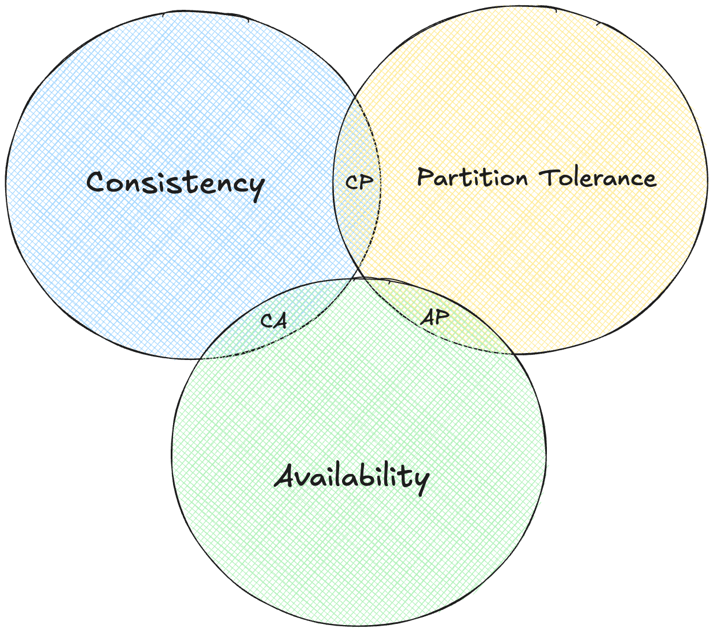
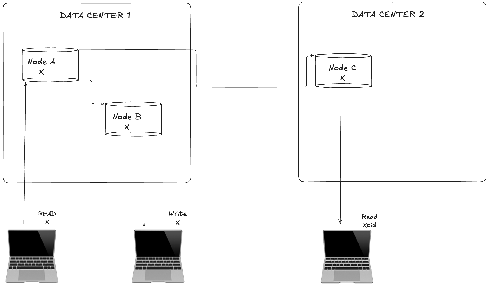
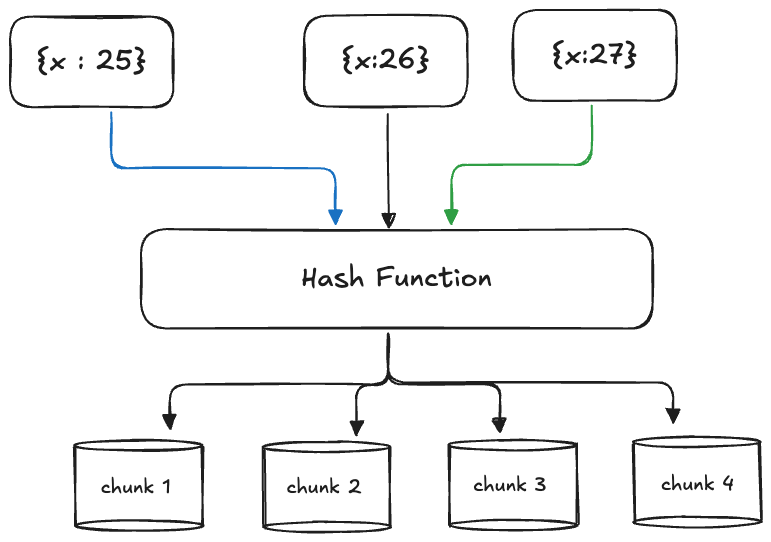
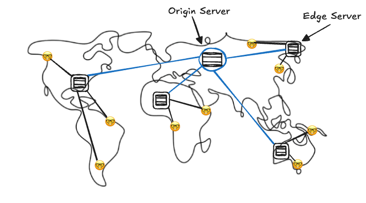
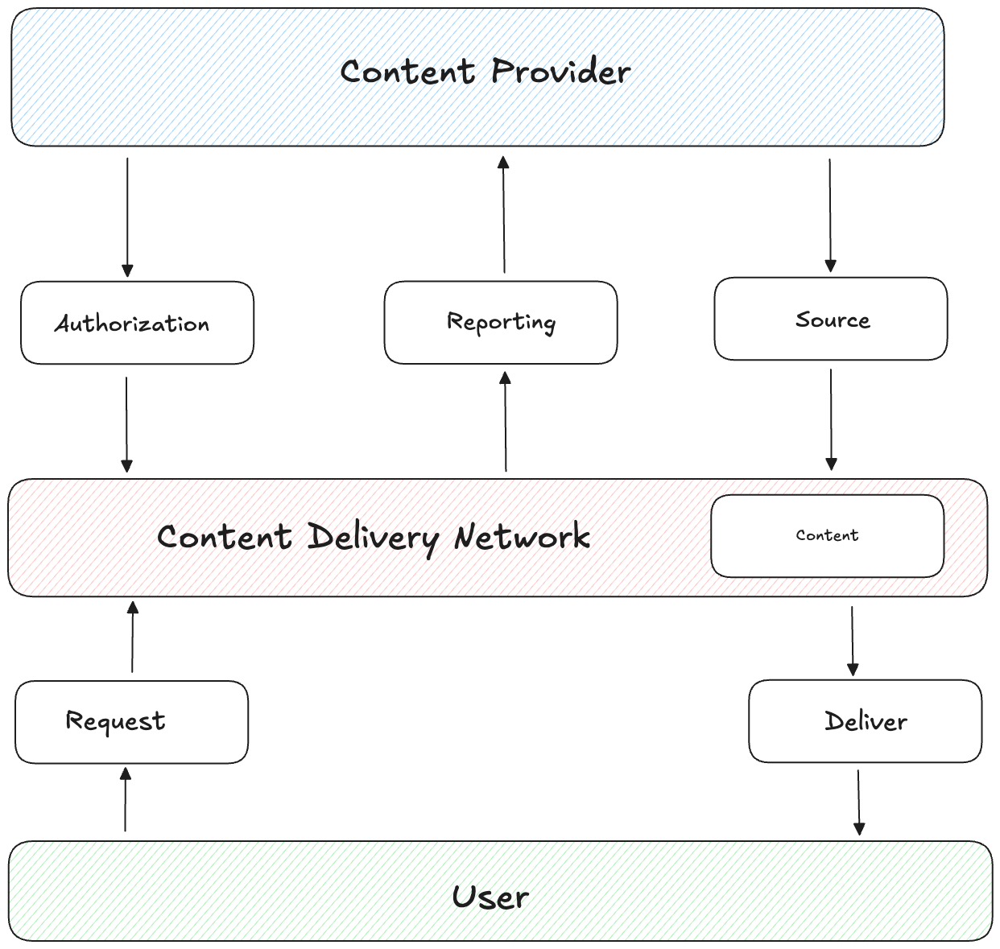

Distributed Systems is one best topics which I encounter on daily basis. A collection of computers or nodes which are independent have to work together to perform a task, isn't this alone so much interesting to know how does it all work behind the scene ??
For the very simple start, distributed system is a collection of independent computers or we also call it nodes, that appear to users as a single coherent (as one) system. These computers communicate over a network to coordinate their actions and share resources.
But the fundamental challenge is making multiple independent computers work together seamlessly while dealing with network delays, failures and inconsistency
Cool isn't it, but what happens when these independent computers can't agree on something ?? What happens then ??
When independent computers in a distributed system can't agree, it creates a conflict that must be resolved to main system reliability. This challenge is addressed by the CAP theorem, which states that a distributed system can only guarantee two out of three properties which is Consistency this ensure all nodes have the same data at the same time, Availability ensures every request receives a response, and Partition Tolerance ensures the system continues to operate despite network failures. Now according to this theorem we need to have 2/3 ratio and sacrifice one :(
Here comes another one, network partition (P) will happen in any real distributed system. Internet get cut, routers fail, data centers lose connectivity. So we must choose between C and A
Consistency focused systems (CP), like banking databases, ensures all nodes have the same accurate data, such as correct account balances, even if it means temporarily halting operations during a failure (that means sacrificing A of CAP). For example, MongoDB stops accepting updates during network issues to maintain data accuracy
Whereas, Availability focused systems like DNS or Amazon's shopping cart, keep operating despite failure, even if it risks delivering slightly outdated information (that means sacrificing C of CAP). For example an old IP address or an inconsistent cart count
Everything is cool, but if we have to choose between consistency and availability, how do we actually make that choice in practice?
The answer lies in selecting the right consistency model a set of rules
defining how “consistent” the system’s data needs to be. Different
applications have different needs. Strong Consistency ensures
that every read retrieves the latest write, providing a unified view of
data across all nodes. This is serious for systems like banking databases,
where showing an outdated account balance could cause serious issues.
Traditional databases like PostgreSQL often use this model, but it comes
at a cost: slower response times and reduced availability during network
issues, as the system waits to ensure all nodes agree.
Eventual Consistency prioritizes
availability, allowing temporary differences in data across nodes, with
the promise that updates will sync over time. For example, in Amazon’s
DynamoDB or email systems, a sent message might take a moment to appear
everywhere, but the system stays operational. This model suits
applications where slight delays are acceptable, offering high
availability and the ability to scale easily.
Casual Consistency ensures that events with
a cause-and-effect relationship are seen in the correct order. Like on
social media platforms, everyone sees a reply after its original post, but
unrelated posts might appear in different orders for different users. This
strikes a balance between strict consistency and flexibility, maintaining
logical order for related actions without requiring instant global
agreement.
Session Consistency ensures that within a
single user session, a user sees their own changes immediately. For
example, when we upload a photo to a platform like Facebook, we see it
right away, even if it takes a moment to appear for others. This model
enhances user experience by prioritizing personal consistency while
allowing slight delays for others.
Why "Eventual Consistency" wins ??
Most successful companies, especially those operating at massive scale, lean toward eventual consistency. Why? Users rarely notice brief delays in data syncing, and the high availability and scalability it offers outweigh the need for instant consistency in many cases. Systems like Amazon’s shopping cart or WhatsApp prioritize staying online and responsive, even if it means occasional, minor inconsistencies. By carefully choosing a consistency model that aligns with their priorities, companies ensure their distributed systems are both reliable and efficient, meeting user needs without overcomplicating the infrastructure.
This makes sense, but how do we actually implement these consistency guarantees ?? What happens under the hood when we're trying to keep data synchronized across multiple machines?
Here consensus algorithms work in, they are the mechanisms that allow nodes to agree on shared state, even when some are unreliable. Consensus algorithms ensure everyone ends up on the same page
The challenge, often called the Byzantine Generals Problem, tells the core issue: a group of generals (nodes) must agree to attack or retreat together, but some messages might get lost, and some generals could even act maliciously. In distributed systems, nodes face similar obstacles—network delays, crashes, or even intentional sabotage and still need to reach a unified decision.
One widely used solution is the Raft algorithm, which simplifies consensus by electing a leader. The process works in three steps: nodes vote to select a leader, the leader handles all client requests and replicates them to follower nodes, and changes are finalized only when a majority of nodes confirm they’ve received them. For example etcd, a key-value store used by Kubernetes, relies on Raft to maintain consistent cluster state across nodes, ensuring reliable coordination even if some nodes fail.
Another approach is the Paxos algorithm, favored in academic settings and used by systems like Google’s Chubby lock service. Paxos is robust, handling complex failure scenarios, but it’s harder to implement due to its complexity.
Few Notes on trade offs we are making while using these
Raft is fast and straightforward but assumes nodes fail innocently. PBFT handles malicious nodes but sacrifices speed. Proof of Work offers high security at the cost of efficiency.
Okay, so we can get computers to agree on things, but what about the actual data ?? How do we store and retrieve information across multiple machines efficiently ??
I have written an overview of data partitioning in this blog System Design 101 you can check this out too.
To handle massive datasets in distributed systems, data partitioning or sharding splits information across multiple machines, enabling scalability and faster queries. Range Based Partitioning divides data into segments based on a key’s value range, such as sorting user records by surname. For example, one node might store surnames A–F, another G–M, and a third N–Z. This approach shines for range queries, like finding all users with surnames starting with “C,” as the system knows exactly which node to check. However, it can lead to uneven data distribution if some ranges are more populated like having many “Singh”s in one partition causing bottlenecks.
Hash-Based Partitioning uses a hash function to evenly distribute data across nodes. Like, a user ID might be hashed and assigned to one of several partitions, ensuring a balanced spread. If user ID 12345 hashes to partition 1 and 67890 to partition 3, the load stays roughly equal across nodes. This method excels for scalability and uniform data distribution, making it ideal for systems like Apache Cassandra.
The downside? Range queries become slower, as the system may need to check all partitions, since hashed values don’t preserve order.
Directory Based Partitioning relies on a lookup service to track where each piece of data is stored. Instead of calculating a partition based on the data itself, the system queries a directory to find the right node. Amazon’s DynamoDB uses this approach to route data efficiently using partition keys. This method offers flexibility, as it can adapt to complex data placement needs, but the lookup service must be fast and reliable to avoid becoming a performance bottleneck.
All these are cool for storing data, but how do we ensure our data doesn't disappear when machines fail ??
It plays as a major role, replication is technique that create multiple copies of data across different nodes to ensure fault tolerance. Like keeping copies of vital documents in a safe deposit box and the cloud, replication ensures your data remains accessible and secure even if a machine goes offline.
There are types of replications too (I am way too cooked while writing this)
Master-Slave (Primary - Replica) Replication
In this model, one primary server handles all write operations, while multiple replica servers handle read requests. The primary server sends updates to the replicas, which store copies of the data. For example, MySQL’s master-slave setup uses this approach. A client writes to the primary, and the changes are copied to replicas, from which clients can read. This setup is straightforward, ensures consistent writes through a single source of truth, and scales well for read-heavy workloads, but if the primary server fails, writes are disrupted until a new primary is chosen. Additionally, replication lag can lead to slightly outdated data on replicas
Master - Master (Multi Primary) Replication
Here, multiple servers can handle both reads and writes, synchronizing changes between them. Systems like CouchDB or MySQL’s master-master configuration use this model, allowing clients to interact with any primary node. This is useful for geographically distributed systems, where users in different regions can write to nearby servers. This eliminates a single point of failure for writes and improves scalability for both reads and writes but synchronizing writes across multiple primaries can lead to conflicts, requiring complex resolution mechanisms, and managing the system is more challenging.
Peer to Peer Replication
In peer-to-peer replication, all nodes are equal, capable of handling both read and write requests, with data copied to multiple nodes. Systems like Apache Cassandra and Amazon DynamoDB use this approach, often relying on consensus algorithms to maintain consistency. Any node can serve client requests, and data is replicated to a set number of nodes for redundancy.
Small Note : MySQL’s master-slave setup is ideal for read-heavy applications, while Cassandra’s peer-to-peer model suits systems needing high availability across regions
replication protects our data, but what about when users are scattered across the globe ?? How do we serve them efficiently from the closes location ??
CDNs comes in clutch to deliver content from the closest possible location, slashing latency and performance. Like you can imagine the frustration of waiting for a webpage to load, CDNs solves this by bringing data closer to you.
The problem starts with physics: data travels through fiber optic cables at about 200,000 km/second, which sounds fast but isn’t enough for today’s expectations. For instance, a round trip from New York to Sydney (~15,000 km) takes ~75ms just for light to travel, and with routing, processing, and queuing, you’re looking at 200–300ms of delay. Yet, users demand web pages to load in under 100ms. CDNs resolve this by acting like local coffee shops scattered worldwide, serving content quickly instead of relying on one distant central hub.
CDNs work by deploying edge servers, or Points of Presence (PoPs), in strategic locations: major cities like New York and Tokyo (Tier 1), regional hubs like Austin or Osaka (Tier 2), and even smaller cities for popular content (Tier 3). When a user requests content, like a video or webpage, the request goes to the nearest edge server. If the content is cached there, it’s served instantly. If not, the edge server fetches it from the origin server, caches it locally, and delivers it to the user, minimizing future delays.
CDNs works well with static content, like images, CSS, JavaScript files, videos, or software downloads, which can be cached for hours, days, or weeks since they rarely change. Dynamic content, like personalized web pages or real-time API responses, is trickier. Solutions like Edge-Side Includes (ESI) cache page templates while inserting dynamic parts, or caching different versions for user segments, help balance speed and accuracy.
Netflix serves 95% of its traffic through its custom CDN, Open Connect, with appliances in ISP data centers. Popular shows are pre-positioned worldwide based on predictive algorithms, ensuring fast streaming with minimal buffering. YouTube delivers billions of hours of video daily, caching popular videos at edge servers and adjusting quality based on your connection. Steam uses CDNs to distribute massive game downloads, saturating your connection while reducing strain on central servers.
There are challenges here too, one is known as Cache Invalidation updating cached content when the origin changes—is notoriously tough. Strategies like Time To Live (TTL) for automatic expiration, manual purging, or URL versioning help. Cache coherence is another different edge servers might hold different versions of content. Eventual consistency or regional cache hierarchies can address this.
All this from my side on Distributed System 101 : Part 1, for the part 2 I have some interesting topics to cover and some use cases to share which I learned during my internships. Hope I was able to make you learn something new today .. HAVE A GREAT DAY AHEAD :)